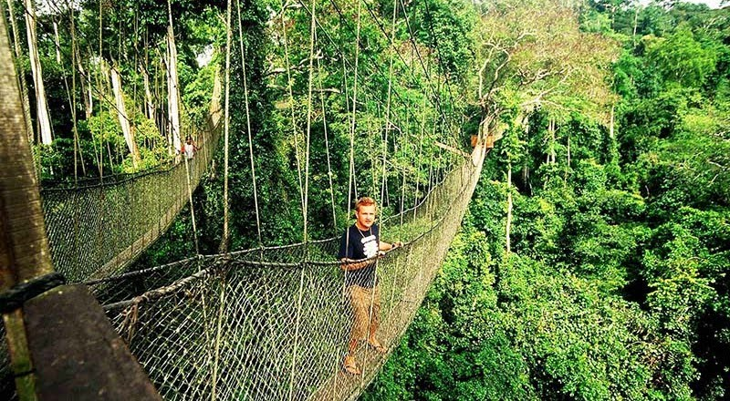

Kakum National Pack
Kakum National Park is a protected rainforest reserve in southern Ghana, located about 33 km north of the coastal city of Cape Coast. The park covers an area of about 375 square kilometers and is known for its diverse array of wildlife, including over 40 species of mammals and 250 species of birds. One of the park's most popular attractions is the canopy walkway, a series of suspended bridges that allow visitors to walk above the treetops and experience the forest from a unique perspective. The park is also home to several hiking trails, camping areas, and picnic sites.
See more of Kakum national Pack
Nzulezu Ghana
Nzulezu is a village located in the Jomoro District of the Western Region of Ghana. What makes this village unique is that it is built entirely on stilts on Lake Tadane, making it a popular tourist destination. The village is believed to have been founded hundreds of years ago by a group of people fleeing from a nearby war, and its residents have maintained their traditional way of life, including fishing and farming. Visitors to Nzulezu can take a canoe tour of the village, visit the local school and church, and learn about the history and culture of the people who live there. Nzulezu has also been recognized by UNESCO as a World Heritage Site for its cultural and natural significance.
See more of Nzulenzu
Lake Bosumtwe
Lake Bosomtwe is a natural lake located in the Ashanti Region of Ghana, about 30 kilometers southeast of the city of Kumasi. The lake is approximately 8 kilometers in diameter and is believed to have been formed by a meteorite impact over one million years ago. The lake is an important cultural and spiritual site for the Ashanti people, who believe it is inhabited by ancestral spirits and is used for traditional rituals and ceremonies. The surrounding area is also home to several small villages and is known for its scenic beauty and recreational activities such as fishing, boating, and hiking. The lake and its surrounding area have been designated as a Ramsar site, recognizing its importance as a wetland ecosystem and habitat for a variety of plant and animal species.

See more of Lake Bosomtwe